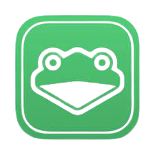

Super Smash Bros Melee was released in 2001 and is an absolute masterpiece of a game. Long-term players know that the game has nearly infinite possibilities as a competitive game. Being an old game, it lacks many of the features you expect to find in more recent esport titles.
Our Mission
The goal of Slippi is to bring Melee into the future and invigorate the sport surrounding the game. So far this has come in the form of enabling: Portable replay files, Complex gameplay stats, Improved streaming video quality, Improved online netcode, Online matchmaking And more.
How do I Start?
You can start playing Slippi/Melee online by going to Slippi.gg in your browser and following the instructions to download below, you can also follow youtube tutorials such as the one by SSBM Tutorials to set it up.